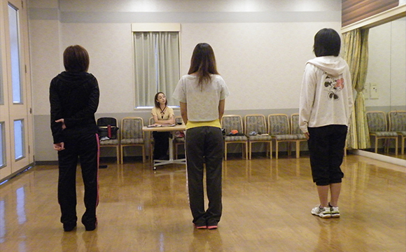

- TOP
- ユニット・グループレッスンコース
アイドルグループ・ユニットを目指している方へ
～ユニット・グループレッスンコース～
2000年代半ばから始まったとされるアイドルグループ・アイドルユニットの戦国時代。現在も地下アイドルやバーチャルアイドルなど、新しい形のアイドルがたくさん誕生しています。また、今後も私たちが想像もしなかったようなタイプのアイドルが現れてくることでしょう。そんな中で、ファンのために末永く活躍できるアイドルチームであるためには、容姿だけでなく歌唱力やパフォーマンスに磨きをかけることも大切な要素となります。
「たくさんいる中の、一人くらい下手でも大丈夫じゃない？」
「ビジュアルが一番大事でしょ？」
などと思っていたら大間違い。

一人ひとりの個性が光るアイドルグループも、足並みが揃ってなくてはプロではありません。当スクールのユニット・グループレッスンでは、1時間30分のボリュームたっぷりのレッスン内容で、ボイストレーニングで発声の基礎を学びながら、ともに競い合い、認め合い、高め合うことで団結力も培っていきます。
ユニット・グループレッスンコースについて
福岡のボイストレーナー・沖島ゆきがレッスンする「Vocal school Pure breed（ピュア ブリード）」では、 プロ養成コースや趣味でボイトレコース、ステージングコースに加え、ユニット・グループレッスンを行っています。ユニットレッスンでは、一人では表現できない歌やパフォーマンスで、見る人を魅了するアイドルグループを目指します。また、グループレッスンでは、2～7名の生徒さんたちとレッスンを受けることで刺激を受け、短期間でのレベルアップが期待できます。
一人ひとりのタレント性を培うユニットレッスン
本物の「歌える」アイドルチームを目指すなら、選ばれるアイドルであり続けるなら、ステージ上では歌唱力・団結力を武器に戦わなくてはなりません。そして、歌唱力を磨き上げ、レコーディングのクオリティを上げることが何より大切です。歌唱力は、レコーディングにかかっているといっても過言ではありません。それがCDの売り上げや楽曲ダウンロード数に直結するからです。プロなら決して、レコーディングの際に、ディレクター・エンジニアを泣かせるようなことがあってはいけません。
「もっともっと歌が上手くなって、堂々とステージに立ちたい」
「ダンスは得意だけど、歌には自信がない」
「メンバーの歌唱レベルがバラバラ」
「振り揃えがバラバラ」
などのお悩みは、福岡のボイストレーナー・沖島ゆきにお任せください。歌もダンスもMCも、そのチームの強みや一人ひとりのタレント性も培うレッスンをご提案いたします。
刺激を受け合えるグループレッスンコース
アイドルグループを目指すわけではないけれど、マンツーマンではないレッスンをご希望の方には、グループレッスンがおすすめです。
見ず知らずの人とのレッスンでは、「恥ずかしい……」「いちばん下手だったらどうしよう」と心配される方もいらっしゃいます。しかし、人前で歌うことは、短期間にレベルアップするための最高の練習方法。他の生徒さんの歌声を聞いて、講師が何を褒め、何を直そうとしているかを客観的に見聞きできることは、マンツーマンレッスンでは得られない経験だからです。
レッスン中の講師のアドバイスは、ほかの生徒さんに対するものであっても、自分のものとして吸収することができます。人の上手いところは自分にも取り入れ、比較して自分の欠点を直すこともできます。

また、「度胸をつける」というメンタル面での強化は、グループレッスンでは自然に身につくこと。最初は恥ずかしがっていた生徒さんもすぐに慣れていき、競い合いあうことで、上達スピードもモチベーションも、マンツーマンレッスンとは比較にならないほど向上します。眠っている才能をよりよい形で開花させ、楽しく刺激しながら歌唱力アップを目指しましょう。
ギャラリー～福岡Sound Boogie クラス スタジオ紹介～
ユニット・グループレッスンは、福岡Sound Boogie スタジオにて行っています。福岡の音楽の中心街に位置するこのスタジオは、福岡の主要なライブハウスにもほど近い立地の良さが特徴の一つ。充実したPA設備を取り揃えた環境で、心置きなく、安心してステージに挑める環境を提供しています。
福岡Sound Boogieの店長さんやスタッフさんが、機材の扱い方などを丁寧に説明してくださいます。
全身をチェックできる鏡を全室完備。振り揃えをチェックしながらトレーニングを受けられます。また、マイクスタンドには嬉しいドリンクホルダー付き。鏡・マイク・照明・ピアノ・メトロノーム・ホワイトボードも完備されています。
レッスンの前後に、徹底したマイク除菌をしてくださっています。
パネルを使って、Aメロ・Bメロ・サビ・Cメロなどの楽曲の構成を、全員で確認しながら理解を深められます。
待合スペースには、PVモニターと自動販売機があります。レッスン前後のコミュニケーションスペースとしてもご活用いただけます。